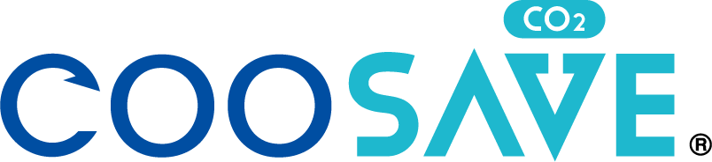
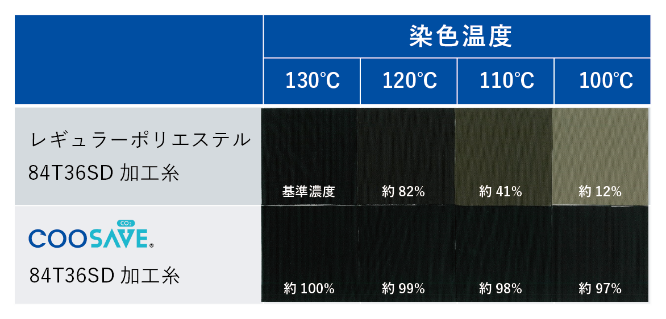
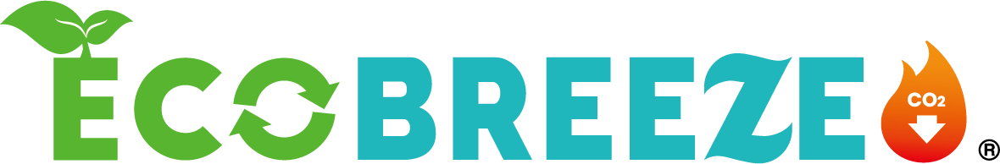

KBセーレン株式会社（本社：大阪府大阪市、代表取締役社長 寺前勝基／以下、当社）は、「環境負荷低減」と「循環型社会の実現」への取り組みとして環境保護理念「BlueMessage®」を掲げております。その理念のもと、新たにカーボンニュートラルの実現を目標とした『COOSAVE®』、『ECOBREEZE®』と2種類の環境配慮型繊維を開発、11月1日より販売を開始することをお知らせいたします。
『COOSAVE®（クーセーブ）』について
ポリエステルの課題である100℃付近での分散染料による低温染色を、ポリマーの改良で可能にした繊維。
風合いを損なわない後染め加工が可能なため、天然繊維やポリウレタンとの交編交織による新しい複合素材やストレッチ素材の開発を可能にしました。
〈特長〉
- 低温・常圧染色によるエネルギー使用量低減・CO₂排出量削減効果
- 高温加工に不向きな繊維にやさしい、分散染料による低温・常圧染色
- 染色堅牢度など物性はレギュラーポリエステルと同等
〈ブランドロゴ〉

〈温度毎の染色試験結果*〉

『ECOBREEZE®（エコブリーズ）』について
焼却時のCO₂発生量の抑制を可能にするポリエステル繊維
〈特長〉
- 焼却時、炭化促進により炭化物（灰）を多く生成（炭素を灰に閉じ込める）、
大気中に放出されるCO₂の発生量を抑制
（レギュラーポリエステルと比較してCO₂発生量約30％低減 ※当社調べ） - 堅牢度など物性はレギュラーポリエステルと同等
〈ブランドロゴ〉

上市時期および売上目標について
| 環境対応素材 | 上市時期 | 2026年度売上目標 | 主な用途 |
|---|---|---|---|
| 低温可染PET COOSAVE® |
2024年11月 | 3億円 | 衣料、ユニフォーム、各種産業資材 |
| CO₂発生量抑制PET ECOBREEZE® |
2024年11月 | 3億円 | 衣料、ユニフォーム、各種産業資材 |
「BlueMessage®」とは
当社の環境保護理念。
人と地球環境に優しい企業の実現に向け、以下の取り組みを行っております。
- 地球温暖化対策
省エネによるロス・ムダの廃止。CO₂排出量削減の取り組み。 - 循環型社会の形成
生産や消費の過程でのリデュース・リユース・リサイクルの取り組み。 - 汚染・生物多様性対策
有害物質の排出量の削減及び有害物質フリー製品の生産。 - 次世代環境対応素材の開発
- 再生ポリエステルを原料としたリサイクルポリエステル繊維
「CleanCircle®」の開発及び販売 - 微生物の作用により土中で分解する性質を持つポリ乳酸（PLA）繊維
「GeoCircle®」の開発及び販売 - 生分解性を有するポリエステル長繊維（ポリエチレンテレフタレート）
「MildGeoCircle®」の開発及び販売 - 植物由来の成分を原料としたバイオポリエステル繊維
「BiosVision®」の開発
- 再生ポリエステルを原料としたリサイクルポリエステル繊維
◆同件に関するお問い合わせ
- KBセーレン株式会社 経営企画部 飯田
- 大阪本社 TEL：06-6345-5044
- E-mail ：kenji.iida@kb.seiren.com